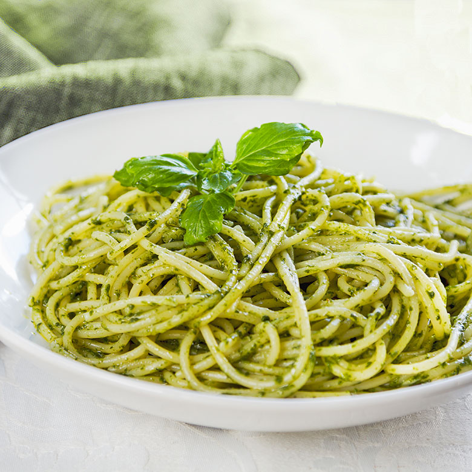

Spaghetti al Pesto

A Pesto Pasta that will make everybody happy!
For a quick meal or for a saturday night fancy dinner, this spaghetti al Pesto will be your number one dish!
To the recipe:
Ingredients
- 1 (16 ounce) package pasta
- 2 tablespoons olive oil
- Half cup chopped onion
- 3 tablespoons pesto
- 2 tablespoons grated Parmesan cheese
Directions:
- Fill a large pot with lightly salted water and bring to a rolling boil. Stir in pasta and return to a boil. Cook pasta uncovered,
stirring occasionally, until tender yet firm to the bite, about 8 to 10 minutes. Drain and transfer into a large bowl.
- Meanwhile, heat oil in a frying pan over medium-low heat. Add onion; cook and stir until softened, about 3 minutes. Stir in pesto,
salt, and pepper until warmed through.
- Add pesto mixture to hot pasta; stir in grated cheese and toss well to coat.
Enjoy!!!